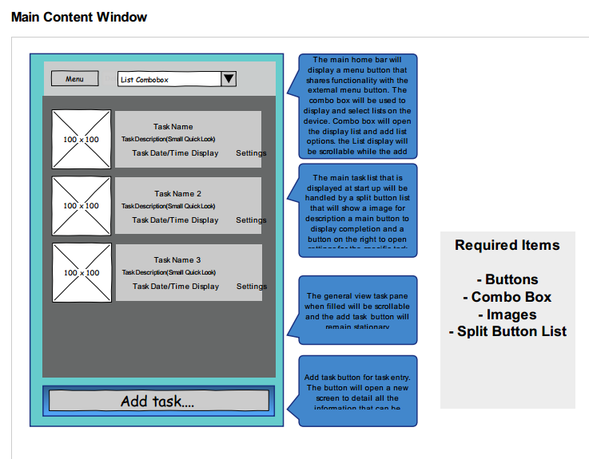
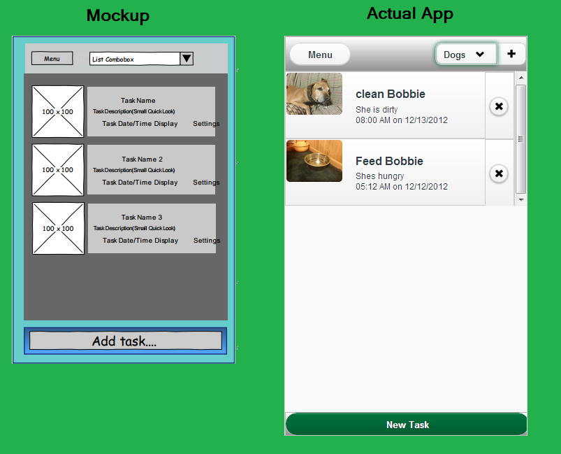

User Interface - Mockup
So the first step in making our app is designing the layout. I was a little turned off to the idea of making a mockup at first, because I figured we could just spend that time actually making the app. Now in hindsight I see how useful those mockups were, they really helped in the UI building stage. The most important part when we make our mockup is knowing which jQuery Mobile UI elements you will be using. If you keep that in mind during the mockup process it will keep you from designing something that might be really hard to make using the jQM framework. If you make good mockups then the UI design phase just comes together. One thing to remember though is that this is still just a mockup, your app will probably change a little bit between now and the finished project. The point of the mockup is to get you thinking about how users will us the app and how to layout the page and UI elements.
A mockup can just be some drawings on paper or you can use one of the many mockup/wireframe tools. There is a pretty good list here http://designmodo.com/free-wireframe-mockup/. We ended up using a mockup tool called Pencil The Pencil Project. Pencil is free and open source and worked well enough for our purposes.
When actually working on the mockup we need plan out which pages we will have in the app and what they will look like. This includes things like dialogs and popup boxes. Don't worry too much about color, for right now we are just planning the layout. One thing you want to keep in mind when designing the mockup is how people are going to use your app. With most devices they will be using a touch screen so your buttons and other "tappables" need to be big enough for all users to tap them. Apple has some good documentation on the iOS UI Element Usage Guidelines. When making our app we won't be exactly following these guidelines but its a good read on why not to use certain elements together or how big certain buttons should be. One example is that if you have a toolbar somewhere on your app, its a good idea to have each toolbar item at least 44x44 pixels in dimension otherwise people may have trouble selecting the one you want. Apple has done a bunch of usage studies to create these guidelines so its a good resource for us.
Here is an example mockup of a page for Visual Keeper:
You can see here that not only did we create a layout for this home page, we wrote little bits about what each element is and how it will be used. Its important for you to understand not only what the UI elements will look like, but what they will do. No one wants extra UI for no reason so make sure it will be used. We have also listed the required jQuery Mobile UI elements for this page. This is good because this tells you how you will make the UI. If you look at a screenshot from the finished app you will see that the general layout from the mockup was used to make the final product. Some small details changed but overall it is pretty close to the mockup.
You want to create mockups like this for every page and dialog in the app. Once you start making the UI you will just have to worry about how to make it work and not what it will look like. After you create your mockups we can move on to the next section of actually creating the UI.